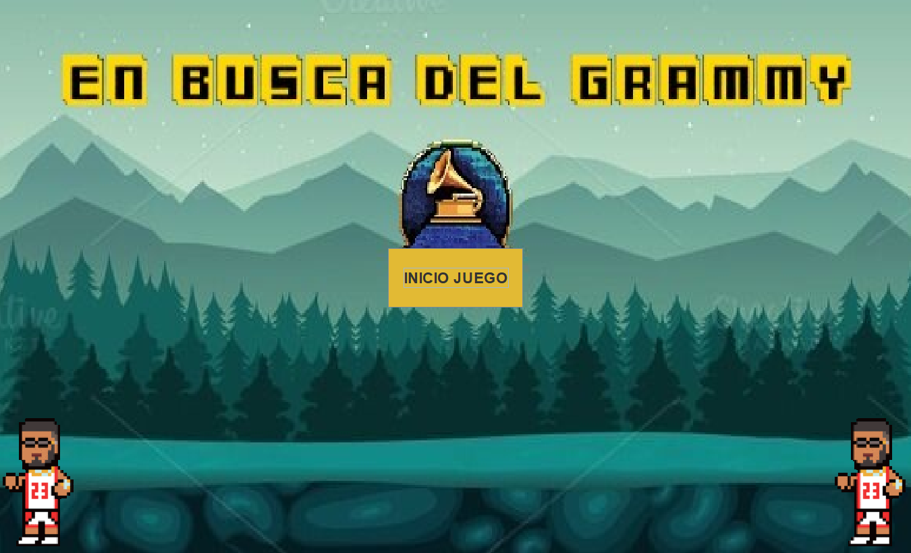

En estos momentos el juego solo se encuentra disponible en PC, dónde debes disponer del programa "Eclipse", además, deberás activar la opcion de Jpanel y Jframe para que sea visual. Una vez instalado, podrá jugar las veces que desee. Próximamente estará disponible en Steam y en consolas de nueva generación.
Una vez instalado eclipse solo te queda descargar nuestro juego. ¿CÓMO SE DESCARGA?
Es muy sencillo, en la pantalla de inicio del juego, pulsa ESPACIO o simplemente pulsa el boton INICIO JUEGO con el ratón de tu ordenador. A partir de ese momento, simplemente deberás seguir las instrucciones del propio juego.
Los controles del juego son muy intuitivos, pulsa las flechas del ordenador para moverte alrededor del mapa